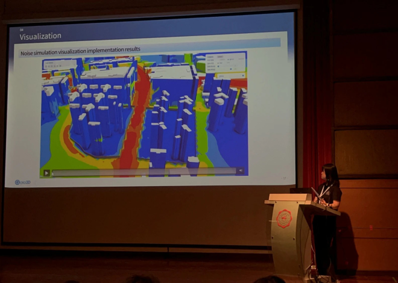
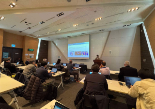
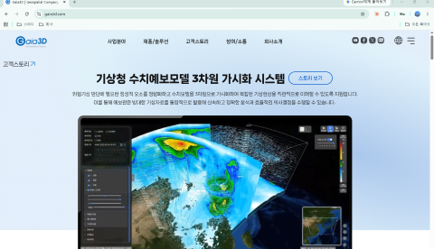

An international interoperability pilot for standard noise data and 3D city visualization. I managed meetings, schedules and deliverables with overseas partners; the team presented at the OGC Member Meeting and FOSS4G 2024 (Bangkok).


2025 · PM · Energy Research Institute
Solar Radiation Visualization
Software that analyzes and visualizes solar radiation on 3D building models. I wrote the requirements, functional and screen definitions, and the final report.
2023–2024 · PM · 3-person team
Company Website Renewal
Rebuilt the menus, key UI and project showcase after reading customer inquiries as signals. Solution inquiries grew about 50% in the three months after launch.

Korea Aerospace Research Institute
Satellite Image Integrated Monitoring System
Management system for micro-satellite imagery (SIMS). I worked on the requirements analysis, screen design, functional specification and project deliverables.